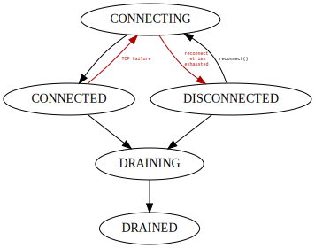

Connection
Connecting
NATS.connect — Functionconnect(; ...)
connect(url; options...)
Connect to NATS server. The function is blocking until connection is initialized. In case of error during initialization process connect will throw exception if retry_on_init_fail is set to false (what is default). Otherwise handle will be returned and reconnect will continue in background.
Options are:
verbose: turns on protocol acknowledgementspedantic: turns on additional strict format checking, e.g. for properly formed subjectstls_required: indicates whether the client requires SSL connectiontls_ca_path: CA certuficate file pathtls_cert_path: client public certificate filetls_key_path: client private certificate fileauth_token: client authorization tokenuser: connection usernamepass: connection passwordname: client nameecho: if set tofalse, the server will not send originating messages from this connection to its own subscriptionsjwt: the JWT that identifies a user permissions and account.no_responders: enable quick replies for cases where a request is sent to a topic with no responders.nkey: the public NKey to authenticate the clientnkey_seed: the private NKey to authenticate the clientping_interval: interval in seconds how often server should be pinged to check connection health. Default is 120.0 secondsmax_pings_out: how many pings in a row might fail before connection will be restarted. Default is2retry_on_init_fail: if set connection handle will be returned even if initial connect fails. Otherwise error causing failure will be trown. Default isfalseignore_advertised_servers: ignores other cluster servers returned by server. Default isfalseretain_servers_order: try to connect server in order specified inurlor list returned by the server. Defaylt isfalsesend_enqueue_when_disconnected: allows buffering outgoing messages during disconnection. Default istruereconnect_delays: vector of delays that reconnect is performed until connected again, by default it will try to reconnect every second without time limit.send_buffer_limit: soft limit for buffer of messages pending. Default is2097152bytes, if too small operations that send messages to server (e.g.publish) may throw an exceptiondrain_timeout: Timeout for drain process. After timeout in case of not everyting is processed drain will stop and error will be reported.drain_poll: Interval fordrainto check if all messages in buffers are processed.
Reconnecting
Reconnect can be forced by user with reconnect function. This function can be also used for reconnect a connection in DISCONNECTED state after reconnect retries were exhausted.
NATS.reconnect — Functionreconnect(connection; should_wait)
Force a connection reconnect. If connection is CONNECTED this will close it and reopen again resubscribing all existing subscriptions. If connection is DISCONNECTED it will try to connect with all previously existing subscription restored. In case connection is already CONNECTING this method have no effect. If called on connection that is DRAINING or DRAINED error will be thrown.
During reconnect period some messages both published and received by the connection might be lost.
Optional keyword aruguments:
should_wait: Iftruemethod will block until reconnection process is started, default istrue.
Disconnecting
To gracefully close connection drain function is provided.
NATS.drain — Methoddrain(connection)
Unsubscribe all subscriptions, wait for precessing all messages in buffers, then close connection. Drained connection is no more usable. This method is used to gracefuly stop the process.
Underneeth it periodicaly checks for state of all buffers, interval for checks is configurable per connection with drain_poll parameter of connect method. It can also be set globally with NATS_DRAIN_POLL_INTERVAL_SECONDS environment variable. If not set explicitly default polling interval is 0.2 seconds.
Error will be written to log if drain not finished until timeout expires. Default timeout value is configurable per connection on connect with drain_timeout. Can be also set globally with NATS_DRAIN_TIMEOUT_SECONDS environment variable. If not set explicitly default drain timeout is 5.0 seconds.
To use NATS it is needed to create connection handle with connect function. Connection creates asynchronous tasks to handle messages from server, sending published messages, monitor state of TCP connection and reconnect on network failure.
Connection lifecycle
When connect is called it tries to initialize connection with NATS server. If this process fails two things may happen depending on retry_on_init_fail option:
- Rethrow exception causing protocol initialization failure.
- Return connection in state
CONNECTINGcontinuing reconnect process in background
Other wise connection in CONNECTED state is returned from connect.
In case of some critical failure like TCP connection closing or mallformed protocol message conection will enter CONNECTING and try reconnect according reconnect_delays specified. If it is unable to establish connection with allowed retries connection will land in DISCONNECTED state and only manual invocation of reconnect may restore it.

Environment variables
There are several ENV variables defined to provide default parameters for connect. It is advised to rather define ENV variables and use parameter less invocation like NATS.connect() for better code portability.
| Parameter | ENV variable | Default value | Sent to server |
|---|---|---|---|
url | NATS_CONNECT_URL | localhost:4222 | no |
verbose | NATS_VERBOSE | false | yes |
verbose | NATS_VERBOSE | false | yes |
pedantic | NATS_PEDANTIC | false | yes |
tls_required | NATS_TLS_REQUIRED | false | yes |
auth_token | NATS_AUTH_TOKEN | yes | |
user | NATS_USER | yes | |
pass | NATS_PASS | yes | |
jwt | NATS_JWT | yes | |
nkey | NATS_NKEY | yes | |
nkey_seed | NATS_NKEY_SEED | no | |
tls_ca_path | NATS_TLS_CA_PATH | no | |
tls_cert_path | NATS_TLS_CERT_PATH | no | |
tls_key_path | NATS_TLS_KEY_PATH | no |
Additionally some parameters are provided to fine tune client for specific deployment setup.
| Parameter | ENV variable | Default value | Sent to server |
|---|---|---|---|
ping_interval | NATS_PING_INTERVAL_SECONDS | 120 | no |
max_pings_out | NATS_MAX_PINGS_OUT | 2 | no |
retry_on_init_fail | NATS_RETRY_ON_INIT_FAIL | false | no |
ignore_advertised_servers | NATS_IGNORE_ADVERTISED_SERVERS | false | no |
retain_servers_order | NATS_RETAIN_SERVERS_ORDER | false | no |
drain_timeout | NATS_DRAIN_TIMEOUT_SECONDS | 5.0 | no |
drain_poll | NATS_DRAIN_POLL_INTERVAL_SECONDS | 0.2 | no |
send_buffer_limit | NATS_SEND_BUFFER_LIMIT_BYTES | 2097152 | no |
Reconnect reconnect_delays default ExponentialBackOff also can be configured from ENV variables. This is recommended to configure it with them rather than pass delays as argument.
ENV variable | Default value |
|---|---|
NATS_RECONNECT_RETRIES | 220752000000000000 |
NATS_RECONNECT_FIRST_DELAY | 0.1 |
NATS_RECONNECT_MAX_DELAY | 5.0 |
NATS_RECONNECT_FACTOR | 5.0 |
NATS_RECONNECT_JITTER | 0.1 |